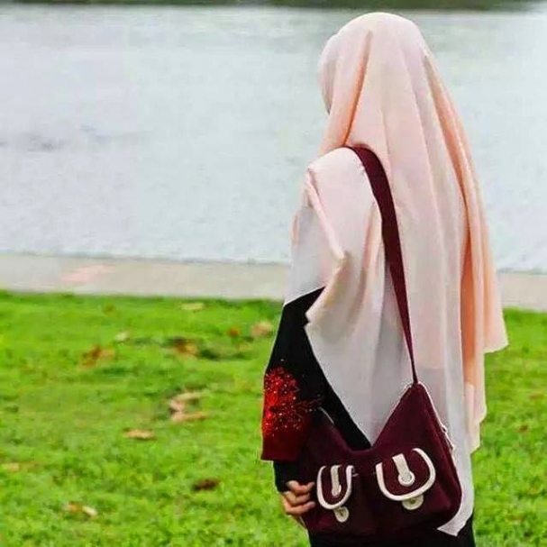
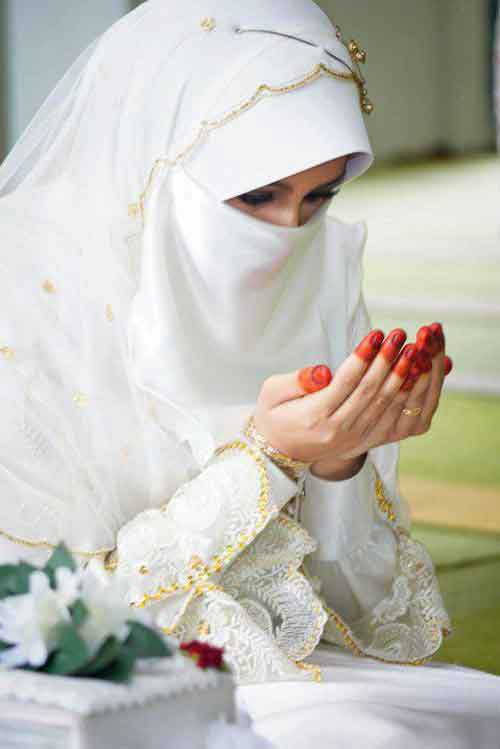
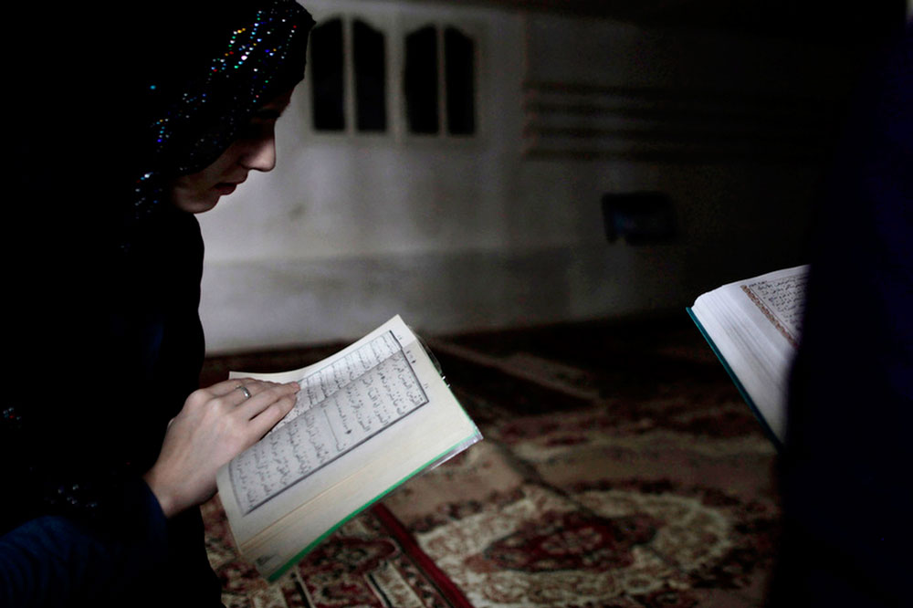

Aurat adalah suatu angggota badan yang tidak boleh di tampakkan dan di perlihatkan oleh lelaki atau perempuan kepada orang lain.
Dalilnya adalah: "..Dan hendaklah mereka menutupkan kain kudung sampai ke dadanya.." [QS. An-Nuur 24:31]."
Artinya ialah bahwa Allah menghendaki agar para wanita menutup kain dari kepalanya hingga ke dadanya. Dari ayat ini maka para wanita Muslimah perlu memperhatikan apa yang ia pakai. Apakah benar-benar hijab yang sesuai hukum Allah, ataukah hanya kain yang dihias-hias oleh tukang salon. Ingat, hijab bukanlah mode yang bertujuan membuat wanita lebih cantik, justru hijab dipakai agar wanita terlindungi dari fitnah. Itulah salah satu tujuan syari'at.

Menikah merupakan takdir tuhan yang sangat diidam-idamkan oleh seluruh umat mamusia karena dengan menikah maka kita akan memperoleh kebahagiaan baik di dunia maupun di kahirat. Namun, ketika kita ingin menikah maka hendaknya kita mempertimbangkan empat perkara sebagai pegangan untuk memilih seorang perempaun untuk dijadikan istri. Nabi muhammad SAW telah mengajarkan kita tentang hadits tentang menikahi wanita karena 4 perkara, dimana ini adalah sebuah hadits yang diriwayatkan oleh imam bukhori dan imam muslim dari abu hurairah r.a. Adapun bunyi dari hadits yang berarti :
Seorang wanita dinikahi karena empat perkara; karena hartanya, keturunannya, kecantikannya, dan karena agamanya, maka pilihlah karena agamanya, niscaya kamu beruntung. (Dikutip dari kitab mukhtar al-hadits an-nabawi hal 63 n0 21.)

Islam memandang wanita memiliki banyak keistimewaan dan lebih unggul dibandingkan laki-laki. Di dalam Al-Qur'an telah banyak memberitahukan kepada kita semua tentang kedudukan wanita dan emansipasinya dengan kaum laki-laki. Wanita memiliki esensi dan identitas yang sama dengan laki-laki. Bahkan satu surat di dalam Al-Qur'an mengandung nama perempuan yakni surat "An-Nisa". Rasulullah SAW ketika ditanya siapa orang yang paling berhak untuk dihormati dan didahulukan, beliau menjawab "ibumu! ibumu! ibumu! kemudian ayahmu". Subhanallah, begitu mulianya seorang wanita di dalam pandangan Islam. Demikian keji perlakuan kaum Jahiliyah terhadap wanita sebelum Islam. Islam datang untuk mengangkat derajat wanita dan memuliakan wanita dengan segala keistimewaannya.